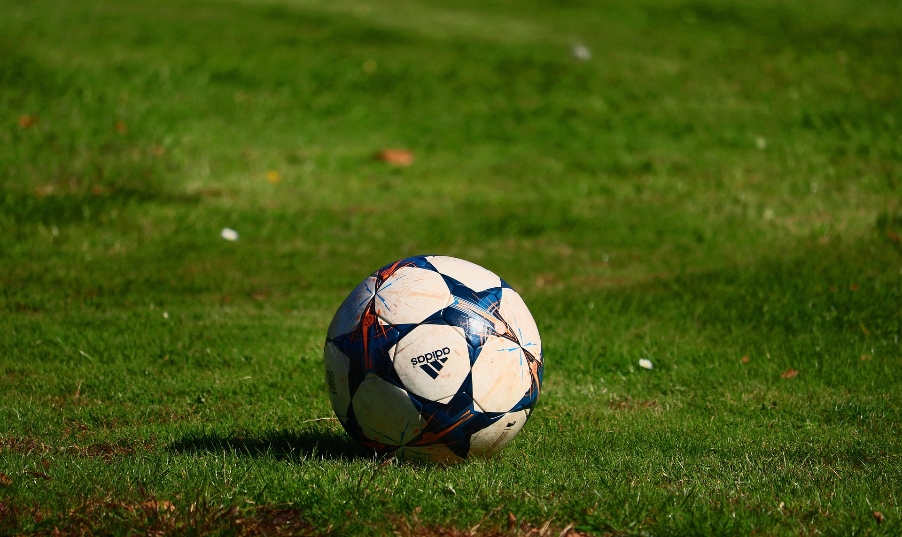

|index |color|
Versenyszerően focizok egyesületnél, de szoktam barátokkal is focizni, főleg nyáron. A csapatunk nem nagyon sikeres mert utólsó előttiek vagyunk, de az elmény a fontos nem a végeredmény.
